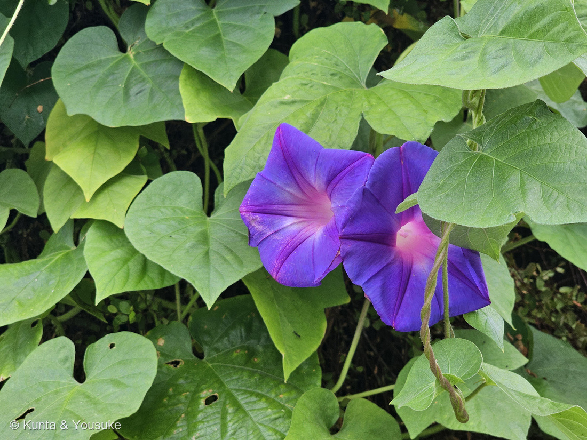

地図を読み込んでいるよ…
🔍 写真も地図も、押しているあいだ拡大して見られるよ（スマホは指を置いてすこし待ってね）。
🌍 の地図＝この子がもともと自生している場所を緑に。熱帯アメリカ（南アメリカ・中央アメリカ）が原産と考えられているよ。⚠ただし三河の植物観察は「東南アジアにも分布する汎熱帯性とも考えられている」とも書いていて、原産地の見かたはゆれている。⭐日本では本州の紀伊半島・四国・九州・伊豆七島・小笠原諸島・沖縄で野生化していて、三河はこの子を「帰化種（在来種）」と両方の書きかたで載せているよ。生えている場所は道端や草地。
⭐⭐ふるさとは熱帯アメリカ（中央アメリカ〜南アメリカ）と考えられているよ。⚠⚠でも、そこは決着していない＝三河の植物観察は「東南アジアにも分布する汎熱帯性とも考えられている」とも書いている＝⭐だから、この緑は「いまのところ有力なほう」だと思って見てね。⚠⚠日本を塗るかどうかも、じつは決まっていない＝この子は本州の紀伊半島・四国・九州・伊豆七島・小笠原・沖縄で野生化していて、三河はそれを「帰化種（在来種）」と両方の書きかたで載せている＝⭐「もともといたのか、あとから来たのか」がはっきりしないので、日本は塗らずに、この文で伝えることにしたよ。⭐⭐⭐種小名の indica は「インドの」という意味なのに、ふるさとの緑はインドではなく反対側の大陸にある＝名前と出身が食いちがっている子だよ。⭐おまけのマルバアサガオも、同じ熱帯アメリカ生まれ＝そして日本中で野生化しているところも同じ＝⭐ちがうのは、花の喉の色だけ（あちらは白）。
⚠ 地図は国（日本と中国だけ県・省）までしか塗れないから、ほんとうの分布より広く見えていることがあるよ。地図はだいたいの場所。正確なところは、上の文を見てね。
ノアサガオ（野朝顔）
Ipomoea indica (Burm.) Merr.
別名 宿根アサガオ · 琉球アサガオ · 西表アサガオ · ケープタウンアサガオ · 園芸名 オーシャンブルー
ヒルガオ科 · Convolvulaceae（サツマイモ属 Ipomoea · ナス目 Solanales）── ⭐ヒルガオ科は、この子を入れて図鑑に7人（005 ヒルガオ・012 アサガオ・106 マメアサガオ・280 マルバルコウ・299 アサガオ・323 アメリカンブルー）
燻太さんの言葉「ノアサガオっていうアサガオがいるらしいけど、似ていると言われればそうかも」── ⭐⭐⭐当たっていたよ。決め手は、花の「喉」の色だった
名前と学名の由来 ── 「インドの」と名づけられた、アメリカ生まれ
- ⭐和名「ノアサガオ（野朝顔）」＝野に生えるアサガオ、という素直な名前だよ。
- ⭐⭐別名がとても多い子＝宿根アサガオ／琉球アサガオ／西表アサガオ／ケープタウンアサガオ（三河の植物観察）。⭐園芸店では「オーシャンブルー」の名前でよく売られている。⭐「宿根」＝冬を越して、次の年もまた芽を出すこと＝299 アサガオのような1年草とちがうところが、そのまま名前になっている。
- ⭐⭐属名 Ipomoea ＝ギリシャ語の ips（芋虫）＋ homoios（似た）。つるが這って巻く姿からとされる（諸説）。⭐299 アサガオでも書いた、サツマイモ属の名前だね。
- ⭐⭐⭐種小名 indica ＝「インドの」。──⚠でも、この子の原産は熱帯アメリカと考えられている（三河「南アメリカ、中央アメリカ原産と考えらえているが…」）。⭐名前と出身が、食いちがっている子なんだ。
- ⭐学名の（ ）も、その食いちがいの跡だよ＝Ipomoea indica (Burm.) Merr.＝はじめ Burman が別の属（Convolvulus）で名づけ、あとから Merrill が Ipomoea 属へ移した、という意味。⭐（ ）の中は「最初に名づけた人」だよ。
⭐⭐⭐⭐⭐ 決め手は、花の「喉」の色だった
燻太さんは「ノアサガオっていうアサガオがいるらしいけど、似ていると言われればそうかも」と書いてくれた。⭐当たっていたよ。──でも、当たっているかを確かめるより先に、ぼくは似ている子を落とすほうからやってみた。
- ⭐⭐いちばんよく似ているのは、マルバアサガオ Ipomoea purpurea。──葉が全縁の円心形なのも、つるに毛があるのも、花が青紫になることがあるのも同じ。
- ⭐⭐⭐三河の植物観察は、この2つを喉の色で書き分けている。──ノアサガオ＝「中央は帯ピンク色」／マルバアサガオ＝「中央が白色になり」。
- ⭐⭐⭐だから、写真の喉の色を測った（324 サンカクカタバミでやったのと同じやりかた）。──右の花＝R204／G134／B176、左の花＝R178／G102／B163。⭐赤と青が高くて、緑だけ低い＝ピンク。⚠白ならR・G・Bの3つがそろって高くなるはずだから、これは白ではない。
- ⭐ほかの手がかりも、ぜんぶノアサガオのほうに合った。
- 葉は全縁の円心形（三河「卵形〜円形、長さ5〜15cm×幅3.5〜14cm…縁は全縁又は±3裂」）
- 花冠は明るい青紫（三河「明るい青色又は青紫色」）
- つぼみが花序の先にかたまってつき、花柄がとても短い（三河＝ノアサガオ「2〜5(〜8)mm」／マルバアサガオ「1.2〜1.5cm」）
- ⚠⚠決められなかったことも、正直に書いておくね。
- 萼片の長さ（ノアサガオ1.4〜2.2cm／マルバアサガオ1.1〜1.6cm）＝定規が無いので測れない
- 茎の毛の質（ノアサガオ「後ろ向きの直軟毛」／マルバアサガオ「短軟毛と長い後ろ向きの粗毛」）＝⚠写真では毛がはっきり見えたけれど、どちらも「後ろ向き」なので、これでは分けられなかった
⭐⭐⭐ 012 アサガオとは、別の子だった
- ⭐燻太さんの「あたらしい子かな？」＝そのとおり、新しい子だよ。
- ⚠012も「葉が丸い」アサガオなので、ぼくもまず012とくらべた。──⭐でも花がちがう＝012はうすい空色に、はっきりした白い喉／この子は濃い青紫に、ピンクの喉。
- ⭐⭐喉が白いということは、012はノアサガオではない（三河の書き分けの、反対がわ）。⏳012がだれなのかは、まだ決まっていない宿題のままだよ。
⭐⭐⭐ この植物のこと ── 冬を越す、大きなアサガオ
- ⭐⭐⭐この子は多年草（三河）。──朝顔なのに、冬を越して、次の年もまた咲く。⭐別名の「宿根アサガオ」は、そこから来ている。
- ⭐⭐花が大きい＝三河は「長さ5〜8(10)cm×幅7〜10cm」と書いている。⭐日本の学習アサガオ（299・I. nil）より、ひとまわり大きい仲間だよ。
- ⭐花期は5〜10月（三河）。⭐この写真は9月5日の朝10時39分＝まだしっかり開いていた。
- ⭐⭐⭐そして、いちばん不思議なこと＝種がほとんどできない。──三河は「強い自家不和合性を示すため系統間交雑でないと種子を付けることがない」と書いている。⭐自家不和合性＝自分の花粉では実らないしくみ。⭐だからこの子は、種ではなくつるや根でふえて広がっていくんだ（⏳ほんとうに実がつかないかは、秋の宿題にしたよ）。
- ⭐日本では、本州の紀伊半島・四国・九州・伊豆七島・小笠原諸島・沖縄で野生化している（三河）。⚠三河はこの子を「帰化種（在来種）」と、両方の書きかたで載せている＝⭐「もともと日本にいたのか、あとから来たのか」が、はっきり決まっていない子なんだね。
⭐⭐ 図鑑のヒルガオ科は、これで7人
- 005 ヒルガオ／012 アサガオ／106 マメアサガオ／280 マルバルコウ／299 アサガオ／323 アメリカンブルー／325 ノアサガオ。
- ⭐⭐323 アメリカンブルーのときに書いたこと＝「合弁で放射対称の5角形の花」は、ヒルガオ科のあちこちにある＝だから花のかたちだけでは決まらない。⭐今回もそうだった＝決めたのは、花のかたちではなく喉の色と花柄の長さだったよ。
⭐⭐⭐⭐ 燻太さんが見たこと ── 壁いっぱいに、背丈より高く
燻太さんが、あとから教えてくれた。「この子は家の壁にびっちり葉を広げてよじ登っていたよ。人の背丈より高いところまで届いていた」。⭐⭐これは、写真には写っていないこと＝その場にいた人にしか分からない手がかりだよ。
- ⭐⭐⭐出典と、ぴったり合った。──三河の植物観察は、この子の茎を「長さ12(15)m以下、絡み付き又はときに平伏し」と書いている。⭐12mまで伸びるつるだから、人の背丈（1.7mくらい）は、その1/7ほど。⭐壁いっぱいになるのは、この子にとってはふつうのことなんだ。
- ⭐⭐⭐そして、これは「種をつけない」話とつながっている。──三河は「ときに節から根を出す」とも書いている。⭐つるが地面や壁を這って、節から根をおろして、そこからまた伸びる＝種を作らないかわりの、ふえかただよ。
- ⚠⚠だから、強すぎることもある。──三河はこう書いている。「世界各地広がり、駆除困難な有害雑草となっているのは、種子を作らず、匍匐シュートを出し、発根し、栄養繁殖する品種であり」。⭐種をつくらない子ほど、つるで広がって手に負えなくなる——ちょっと不思議だけれど、種をつくるのに使うぶんの力を、ぜんぶ「伸びること」に回していると考えると、つながって見えるね（⚠この読みかたは、ぼくの考えだよ）。
- ⚠ただし、これは同定の決め手にはしていない。──つるが高く伸びること自体は、アサガオの仲間ならめずらしくないから。⭐決めたのは、あくまで喉の色だよ。⭐この観察は「決め手」ではなく、「合っている」ほうの手がかり。
⏳ 宿題 ── この子を、もっと確かにする5つ
- ⏳⭐⭐⭐①午後にもう一度見て、花の色が変わっているか＝三河は「古くなると赤紫色や赤色になり」と書いている＝⭐朝の青紫が、夕方に赤紫になっていたら、それだけでノアサガオの裏づけになるよ。
- ⏳⭐⭐②萼片の長さを測る（1.4〜2.2cmならノアサガオ／1.1〜1.6cmならマルバアサガオ）＝⭐定規かコインを横に置いて1枚。
- ⏳⭐⭐③実ができるか見る＝ノアサガオは、ほとんど種をつけないはず＝⭐秋になっても実が見つからなければ、これも裏づけ。
- ⏳⭐④012の空き地の子と、喉の色を見くらべる。
- ⏳⭐⭐⭐⑤全体像の写真＝壁いっぱいによじ登っているところ（⭐燻太さんが「また今度撮ってみるね」と言ってくれた1枚）。⭐つるがどこから来て、どこまで届いているかが分かると、この節がもっと確かになるよ。⚠よそのお宅の壁だから、表札・番地・玄関のあたりは入れないでね（⭐通りに面した場所の写真は、建物や表札を切るのが、この図鑑の決まりだよ）。
参考：三河の植物観察・ノアサガオ（Ipomoea indica (Burm.) Merr.／多年草／茎の軸部分に後ろ向きの直軟毛が±密にある／葉は卵形〜円形、長さ5〜15cm×幅3.5〜14cm、縁は全縁又は±3裂／萼片はほぼ等長、長さ1.4〜2.2cm、先は次第に線状尖鋭形になり、反り返らず／花冠は明るい青色又は青紫色、古くなると赤紫色や赤色になり、中央は帯ピンク色、漏斗形、長さ5〜8(10)cm×幅7〜10cm／花期5〜10月／強い自家不和合性を示すため系統間交雑でないと種子を付けることがない／日本（本州の紀伊半島、四国、九州、伊豆七島、小笠原諸島、沖縄）で野生化／別名 宿根アサガオ、琉球アサガオ、西表アサガオ、ケープタウンアサガオ）／三河の植物観察・マルバアサガオ（Ipomoea purpurea／1年草／茎の軸部分には短軟毛と長い後ろ向きの粗毛がある／萼片は長さ1.1〜1.6cm、外面の下部1/2に開出する粗毛がある／花冠は赤色、赤紫色、又は青紫色…中央が白色になり、漏斗形、長さ4〜6cm、直径5〜8cm／花柄は長さ1.2〜1.5cm／ノアサガオは花柄が短く2〜5(〜8)mm）